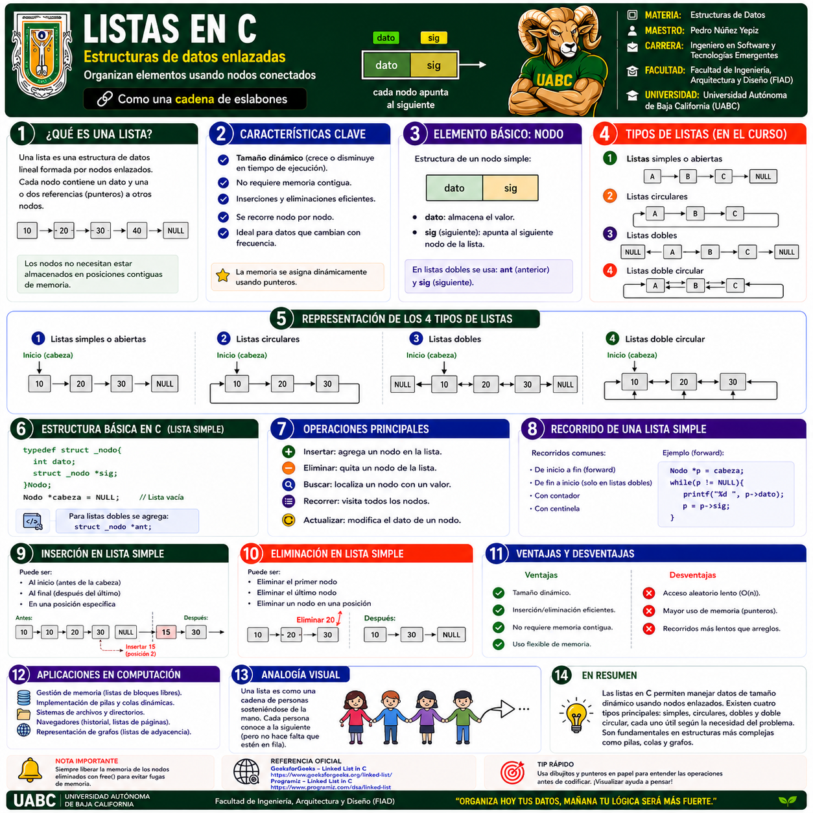
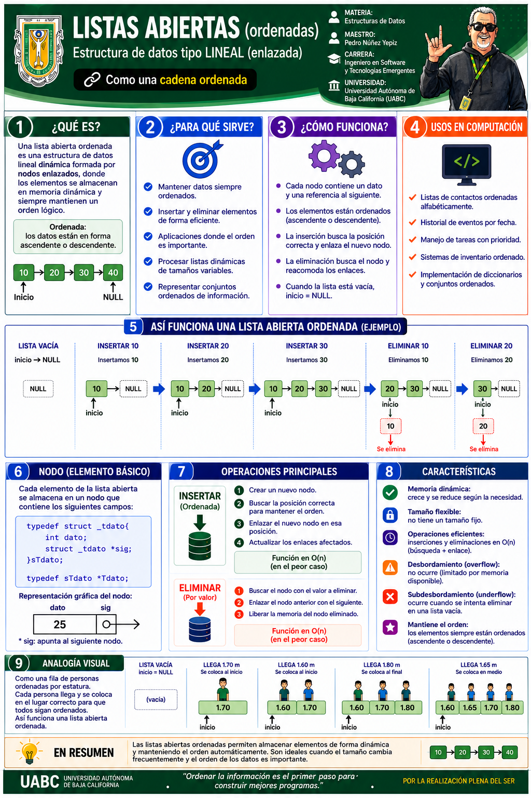
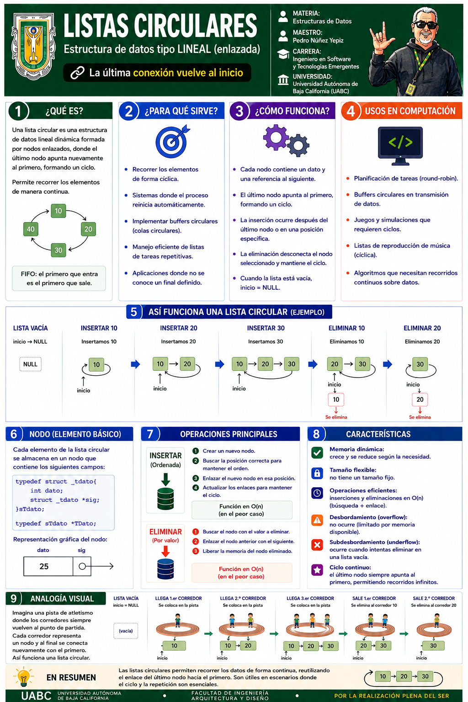
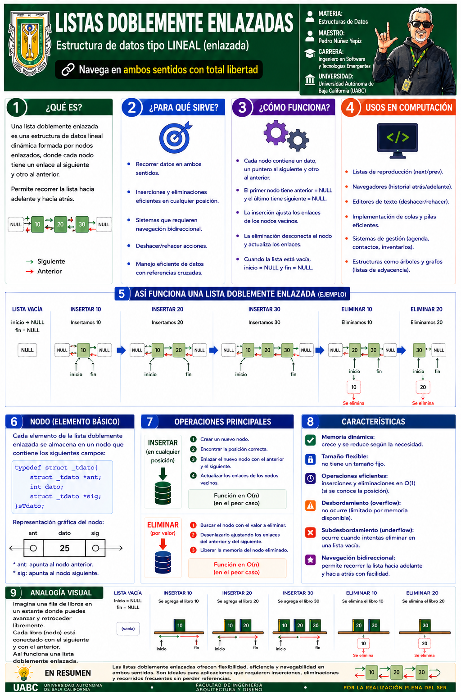
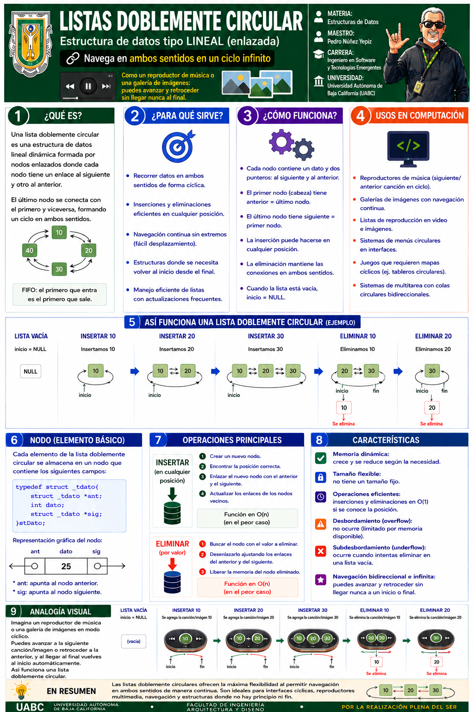

1 · Listas en C · Conceptos fundamentales
Definición, características, estructura del nodo, operaciones principales, representación de los cuatro tipos de listas y aplicaciones.
Selecciona cualquier infografía para abrirla a pantalla completa. En la vista ampliada puedes usar Zoom +, Zoom −, las flechas anterior/siguiente o la tecla Esc para cerrar.

Definición, características, estructura del nodo, operaciones principales, representación de los cuatro tipos de listas y aplicaciones.

Lista simple con inicio definido y último nodo apuntando a NULL; inserción, eliminación, recorrido y ordenamiento.

El último nodo regresa al primero, permitiendo recorridos continuos y aplicaciones cíclicas como round-robin y buffers circulares.

Cada nodo mantiene enlaces anterior y siguiente para permitir navegación bidireccional, inserciones y eliminaciones más flexibles.

Combina navegación en ambos sentidos con un ciclo cerrado, ideal para reproductores, galerías y recorridos continuos.